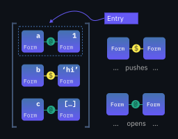
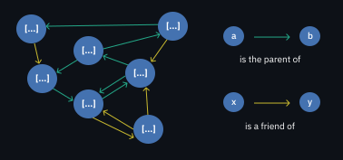

Novika

A language that doesn't affect the way you think about programming, is not worth knowing. — Alan J. Perlis
Novika is a free-form, moldable, interpreted programming language.
Table of contents:
- Introduction
- Examples
- Installing Novika
- Building Novika from source
- Running the examples
- Playing with the REPL
- On blocks
- Want to learn more?
- Trade-offs, or why is Novika so slow?
- Contributing and internals
- Contributors
Introduction
First and foremost, Novika is weird. Why not, though, being inspired by Lisp, Forth, Factor, Self, Red/Rebol, Smalltalk, and so on — the weird kids on the block.
Novika is like simulating a house of LEGO blocks vs. simulating a house of huge concrete blocks, wood, and all that. The latter is much easier computationally, while the former offers unlimited flexibility. You can build only so much from huge concrete blocks, wood, chairs, and whatnot. With LEGO, it's another story — an infinite amount of possibilities before you.
Semantically, Novika is like Lisp A set in motion by Lisp B with the possibility of bidirectional communication and control — but with objects, stacks, and so, so much more!
And the syntax of Novika? Well, there is no syntax. That is to say, almost no syntax. Syntactically, Novika lies somewhere between Lisp and Forth. And Forth — Forth has no syntax.
Examples
Hello World:
'Hello World' echoFactorial. Note that parentheses () do not mean anything in Novika. They're like single-character comments.
(5 to: 1) product "120"First 100 Fizz buzz rounds:
1 to: 100 each: [
[ [ 15 /? ] 'FizzBuzz'
[ 5 /? ] 'Buzz'
[ 3 /? ] 'Fizz'
] choose echo
]Sieve of Eratosthenes: prints prime numbers in [2; 120].
2 to: 120 ||-> [ $: n (stack without: [ n /? ]) asStack n ] each: echoZigzag problem from LeetCode, with the examples as tests. Observe the boundary between terseness and readability.
"""
Not the mathy one but the naive one, because programming is
not math thank goodness!
"""
[ dup 1 = => [ drop ^ ]
collect: '' dup 1 |to $: grid
0 $: col
[ grid |: |> |atRightBound? asc desc sel ] $: desc
[ grid |: <| |afterFirst? desc asc sel (col 1 + =: col) ] $: asc
desc @: action
[ $: char grid |: [ char ~ ] ] @: put
each: [ put action =: action ]
grid join
] @: convert
describe 'Zigzag Conversion' [
in leetcode
it should 'follow the happy path' [
'A' 1 convert 'A' assert=
'A' 3 convert 'A' assert=
'HELLOWORLD' 1 convert 'HELLOWORLD' assert=
]
it should 'convert given 3 rows' [
'PAYPALISHIRING' 3 convert 'PAHNAPLSIIGYIR' assert=
]
it should 'convert given 4 rows' [
'PAYPALISHIRING' 4 convert 'PINALSIGYAHRPI' assert=
]
]
runTestsInGroup: leetcodeWhat about something a bit more elaborate?
- A snake game example
- A simple documentation viewer
- A prompt that blinks in colors from the LCH color space
- A TDD-d observable
- A live REPL interface to a DSL for infix math expressions
Installing Novika
The fastest way to get started with Novika is to download and unpack the latest nightly build. Novika releases are as unstable as nightlies, if not more so, so don't worry :zany_face:
-
If you don't want to do a system-wide install, simply use
bin/novikawhile in the directory of the nightly/release. -
Otherwise, move the
envfolder to your user's home directory, and rename it to.novika. Optionally, addbin/novikato your PATH.
Building Novika from source
You will need to have Crystal installed.
- Clone this repository:
git clone https://github.com/novika-lang/novika.git- Go there:
cd novikaWindows
shards build --without-development --release --progress --no-debugLinux
shards build --without-development --release --progress --no-debug -Dnovika_console -Dpreview_mt
What do the -Ds mean?
-Dnovika_console: use termbox2.cr as the backend for capability console. Otherwise, console won't be available. Since termbox2 doesn't support Windows, you have to drop the flag when compiling for/under it.
What's next?
You can optionally add bin/novika to PATH, and/or create a symbolic link for env called .novika in your user's home directory, like so:
ln -s /path/to/novika/repo/env /home/<your-user>/.novikaI'd recommend you to run the tests with bin/novika tests. If something seems wrong, file an issue.
Running the examples
Try to run one of the examples. Some of them contain instructions on how you can run them. In general, you can use:
bin/novika path/to/example.nkIf it's yelling at you in red that you need console, use:
bin/novika console path/to/example.nk(unless you're on Windows; Novika on Windows doesn't support console yet)
Playing with the REPL
To run the REPL, use:
bin/novika replTo list all available words, use la:
>>> laTo see documentation for a particular word, use help followed by the word that you're interested in:
>>> help toOrphan
...
>>> help 123
decimal number 123
>>> help 'Who am I?'
quote 'Who am I?'To get a string description of a thing's type, use typedesc:
>>> 123 typedesc
... 'decimal' ...
>>> ##foobar typedesc
... 'quoted word' ...On blocks
Novika is all about blocks! The name is pretty generic, and has little if any connection to "blocks" of mainstream programming languages.
Blocks are lists with a cursor

Blocks allow you to store different kinds of forms one after another. A form could be a number, a string, or even another block!
In this regard, a block is somewhat similar to a Python list or a Ruby array.
Moreover, now taking the cursor into account, blocks seem a lot like text input fields but with arbitrary constituents rather than just characters.
You can move the cursor back and forth in a block. You can "backspace", insert, and so on, all this not only empowering computation but also backed by computation.
"""
'Cut' the block in half at the cursor using |slice.
"""
[ 1 2 3 4 | 5 6 7 8 ] |slice leaves: [ [ 1 2 3 4 | ] [ 5 6 7 8 | ] ]
"""
Remember where the cursor is, then slide it forward and double
each 'top' number. Finally, move the cursor back to where it was.
"""
[ 1 2 3 4 | 5 6 7 8 ] |~> [ dup + ] leaves: [ [ 1 2 3 4 | 10 12 14 16 ] ]Blocks are dictionaries — and objects
Blocks are dictionaries for themselves and for other blocks. The former is useful for running blocks, and the latter is useful for connecting blocks to each other — to form scopes, object hierarchies, and so on.
Again, you can imagine something like a Python dictionary or — even better — a JavaScript object.
Block dictionaries hold entries.
When the key form is seen, looked up in the dictionary, and opened, opener entries (or openers for short) in turn open the value form (open is Novika-speak for "run", "execute", "evaluate").
On the other hand, pusher entries simply push their value form onto the stack.
100 $: x
200 $: y
x y + echo "STDOUT: 300⏎"
[ ${ x y } this ] @: newPoint
100 200 newPoint $: A
300 400 newPoint $: B
A echo "STDOUT: [ ${ x y } this · ${y :: 200} ${x :: 100} ]⏎"
B echo "STDOUT: [ ${ x y } this · ${y :: 400} ${x :: 300} ]⏎"
A.x A.y 2echo "STDOUT: 100⏎200⏎"
B.x B.y 2echo "STDOUT: 300⏎400⏎"Blocks are stacks
As simple as that: blocks are also stacks, you just have to look at them differently.
Applying operations immediately before (or even after!) the cursor enables brevity often associated with stack-oriented programming languages. You can also move the cursor — this allows to avoid rots and other nasty Forth-isms. Here is how rot can be implemented in Novika:
[ <| swap |> swap ] @: rotLet's execute 1 2 3 rot step-by-step, as if we were a Novika interpreter.
- Stack:
[ | ], block:[ | 1 2 3 rot ] - Push
1, stack:[ 1 | ], block:[ 1 | 2 3 rot ] - Push
2, stack:[ 1 2 | ], block:[ 1 2 | 3 rot ] - Push
3, stack:[ 1 2 3 | ], block:[ 1 2 3 | rot ] - Open
rotwith stack:[ 1 2 3 | ]: instantiate (basically copy) the block[ <| swap |> swap ], and move the cursor to the beginning like so:[ | <| swap |> swap ] - Open
<|, stack:[ 1 2 | 3 ], block:[ <| | swap |> swap ] - Open
swap, stack:[ 2 1 | 3 ], block:[ <| swap | |> swap ] - Open
|>, stack:[ 2 1 3 | ], block:[ <| swap |> | swap ] - Open
swap, stack:[ 2 3 1 | ], block:[ <| swap |> swap | ] - Cursor for block
[ <| swap |> swap | ]is at end, close it! - Cursor for block
[ 1 2 3 rot | ]is at end, close it! - No more blocks to run!
Voilá! It does rotate: 1 2 3 -- 2 3 1.
Blocks are vertices
Scoping, inheritance, and composition are all achieved through block relationships in Novika. There are two kinds of relationships: is a friend of, and is the parent of.
- Blocks can have only one parent, or no parents.
- Blocks can have zero or more friends.
Blocks can change their (and other blocks') relationships (i.e. edges) at runtime, thereby affecting how, which, and whose entries are looked up and opened.
Block relationships can be cyclic: already-queried blocks are simply skipped. For those interested, Novika entry lookup is a weird (mainly for historical reasons and for convenience) combination of DFS and BFS (I guess...)
For instance, first, is the parent of relationships of block A are traversed, followed by a traversal over A's friends, followed by a traversal over the friends of A's parents. Together they are known as the first echelon in Novika.
The second echelon is parents, friends, and friends of parents of the first echelon. Novika lookup machinery (and machinery it is!) simply recurses on members of the second echelon; prior to that it queries each member for whatever it is interested in, and turns to recursion only when the query remains unanswered.
[ 100 $: x ] obj $: definesX
[ 200 $: y ] obj $: definesY
"""
Establish a cyclic relationship (parentheses are like comments,
they don't mean anything and don't have to be matched):
"""
(definesX -- definesY -- definesX) drop
definesX.x leaves: 100
definesX.y leaves: 200
definesY.x leaves: 100
definesY.y leaves: 200Blocks are code
When you're writing Novika, you're writing blocks. It's like when you're writing Lisp, you're writing lists.
All Novika code you saw or will see is a block — or, rather, is in a block. The toplevel block is the one that holds your whole code and doesn't need to be enclosed in []s. You can think of it as of the "file" block, that is, the block which encloses an entire file of Novika source code implicitly.
this echo "STDOUT: [ this echo · ${__path__ :: '/path/to/folder'} ${__file__ :: '/path/to/folder/file.nk'} ]"Blocks are continuations
A Novika continuation is a block that consists of two blocks: the stack block, and the code block, like so: [ [ …code… ] [ …stack… ] ]. Many words exist that create, add, remove, or modify continuation blocks and continuations. Most of them are so-called builtins, which are bits of runnable native code as seen from Novika. Here are some examples:
-
hydrate, as in:
[ 1 2 ] [ + echo ] hydrate "STDOUT: 3" -
open — this is an ancient (and often used) word from which the term to open came. What is described as opening is in reality a form of hydration, but for historical reasons opening is used anyway.
4 [ dup + ] open echo "STDOUT: 8" -
do — opens a block with a new empty (isolated) stack:
1 2 [ stack echo ] do "STDOUT: [ ]" -
And more, see the words documentation or env/core.
Stack blocks can be shared between two continuations (as in open or opener entries where the block you open shares the stack with the opener block). Code blocks can also be shared, but I have never needed this in practice so there's no word that does something like that in env/core.
In the code block, the cursor is kept immediately after the form that is being opened right now.
-
The current (active) continuation can be accessed using the word
cont, as in:1 2 cont echo 3 4 "STDOUT: [ [ 1 2 cont echo | 3 4 ] [ 1 2 ] ]" -
The stack of the current continuation (dubbed the active stack or simply the stack) can be accessed using the word
stack, as in:1 2 <| stack echo |> 3 4 "STDOUT: [ 1 | 2 ]" -
The code block of the current continuation (dubbed the active block or simply the block) can be accessed using the word
this, as in:1 2 this echo 3 4 "STDOUT: [ 1 2 this echo | 3 4 ]" -
The code block of the previous continuation (and the one that will be activated when the current continuation finishes) can be accessed using the word
ahead. This word is crucial for writing human-readable Novika, as in1 to: 100 only: even? each: echo:[ ahead echo ] @: sneakyPeaky 1 2 sneakyPeaky 3 4 "STDOUT: [ 1 2 sneakyPeaky | 3 4 ]"
Finally, the continuations block is a single large block that holds individual continuation blocks. The top continuation block is the one that is currently executed. Below is (roughly) what you'd get if you type conts shallowCopy each: echo in the REPL. Do not forget shallowCopy, or the language will gain consciousness — and this never ends well!! :)
[ [ … REPL code … · ${__path__ :: '/path/to/novika/env'} ${__file__ :: '/path/to/novika/env/repl/repl.nk'} ${_pgRoot :: a block} @{startSession :: a block} ] [ ] ]
[ [ … More REPL code … · ${error :: false} ${pgStack :: a block} @{runLine :: ( Q -- )} ] [ ] ]
[ [ ahead thruBlock loop ] [ ] ]
[ [ new $: iterBody iterBody createLoop $: nextLoop $: breakLoop @: startLoop iterBody #break breakLoop opens iterBody #next nextLoop opens startLoop · ${iterBody :: a block} ${nextLoop :: a block} ${breakLoop :: a block} @{startLoop :: a block} ] [ ] ]
[ [ this =: breakTo orphan loopBody hydrate! ] [ ] ]
[ [ orphan iterBody hydrate | repeat ] [ ] ]
[ [ '>>> ' readLine br: [ runLine ] [ 'Bye.' echo break ] ] [ ] ]
[ [ ahead thruBlock ahead thruBlock br ] [ ] ]
[ [ runLine ] [ ] ]
[ [ … More REPL code … · ${line :: 'conts shallowCopy each: echo'} ${self :: ( Q -- )} ${durationMs :: 0} ${pgRootInstance :: a block} ${pgStackCopy :: a block} ] [ ] ]
[ [ [ reportError #true =: error self resume ] @: __died__ [ pgStackCopy pgRootInstance line slurp hydrate! ] measure | =: durationMs · @{__died__ :: a block} ] [ ] ]
[ [ monotonic $: t1 do | monotonic $: t2 t2 t1 - · ${t1 :: 35111923.17418} ] [ ] ]
[ [ pgStackCopy pgRootInstance line slurp hydrate! ] [ ] ]
[ [ conts shallowCopy each: echo ] [ 1 2 3 4 ] ]Don't be scared, it's just a bunch of letters :)
Want to learn more?
- Explore files in
tests/to see how various words can be used. Beware, however, that those are internal behavior tests — and most of the time, they aren't practical/particularly readable. - Explore
helpmessages of various words. Read word documentation here. - Explore files in
env/core, the language's standard library. - Explore the Wiki.
I know there aren't a lot of materials here nor anywhere that'd teach you the language. On the fundamental stuff, the language is so weird I can't even remember how it all came to be. And in general I have so much to say that I just don't know where to begin. Hopefully, there will be more stuff here someday.
Explore Novika as if it were an alien spaceship that accidentally fell on Earth, full of weird little yellow rotating yukoos. The aliens did not write on every button what it will do when you press it. And even if they did, what kind of language would they be using?!
Trade-offs, or why is Novika so slow?
Of course, I had to make some trade-offs to achieve such a peculiar arrangement!
Negative performance
Wait, what?
See, good compilers/interpreters live well in the positives. That is to say they remove irrelevant runtime. Bad compilers and “normal” interpreters live near zero, at the very least getting rid of the notion of parsing.
And what about Novika? Novika is deep in the negatives. Novika parses at runtime. Yup, you’ve heard it right.
Waging wars with FFI will give you performance, sure (that is, will move you closer to zero from the negative side!) But then, why not simply use C, Rust, Crystal, or any other fancy-schmancy programming language — especially if you're doing something serious?
Readability
It's up to you.
Maybe you want your code to look cryptic — so your friends think you’re a hacker or something. Novika will not stand in your way.
But wait, why is that? Why is Novika not designed to be readable? Isn't that popular nowadays?
See, in Novika, it is easy to make your code readable — even natural language-like. This ease, however, degrades performance. That is, enforcing style or syntax degrades performance. Even if Novika someday gets a JIT, writing natural-language-like code will still impose a performance penalty, however minuscule it will be. The choice between complete, high-level control over the language and the machinery involved vs. performance is up to you.
Big projects
Never.
I have no clue what big projects are, or what they need. There are enough smart people in this world already, and I'm certainly not one of them.
I would say Novika is an interesting experiment and a great personal project. Perhaps the language will grow into something bigger a few years from now. Most likely, however, it'll die. Maintaining a general-purpose programming language in the 21st century is hard — there's just so much it must be able to do! After all, we are not drawing rectangles at the speed of a snail today, are we?
Contributing and internals
First of all, thank you for even getting this far! Even if you didn't read the whole document, thank you. Seriously :)
Where do I start?
- First of all, the documentation for rev10 (i.e., this implementation) is available here.
- Try exploring capabilities and their implementations. This is where native code words like
dupandappendEchoare defined. This is also a nice starting point to find bugs, optimize, add new stuff, etc. It's also one of the places where you can find typos, lack of documentation, and even some TODOs. - Try looking through the interpreter code in general. I do have a compulsion to write comments, so most of the code is documented. How well documented is not for me to decide, but documented it is.
- If you're someone who knows something about optimization, your eyes will hurt! Believe me :)
What happens where?
When you do your bin/novika hello.nk, here's roughly the order in which various components get invoked:
- The command-line interface frontend is what greets you (or doesn't) and sets everything up.
- Resolver knows where everything is on the disk.
- Capability collection allows to control the capabilities of this particular invokation of the language/capabilities of the language overall. For example, this component is aware of you droping the
-Dnovika_consoleflag. - Capability interfaces and implementations describe and implement those capabilities.
- Scissors cut the contents of
hello.nk(or any other blob of source code) into pieces called unclassified forms - Classifier classifies them, and shoves the resulting forms into a file block.
- Blocks are the most important forms in Novika.
- Engine runs file blocks and all blocks "subordinate" to them. This is the entrypoint for code execution, and one of the cornerstones of Novika.
- Errors happen. Or don't.
Note that most of these components interact with each other, making this list pretty pointless "for science".
Implementing features as a capability (in Crystal) vs. in Novika
TL; DR: The rule of thumb for me is if something requires awareness of the
user's OS or isn't portable/ffi-compatible, it should be implemented as a
capability (meaning in Crystal).
For instance, networking, reading/writing files, building paths -- all of this requires awareness of the underlying OS, due to different syscalls, permission jugglery, and other slash-vs-backslash kinds of issues.
Novika is a high-level interface -- you won't believe it, a language! Whether the underlying ("discussed") objects are from the native code "reality" or constructed with the means of the language, is completely irrelevant to the end user, nor to Novika the High-Level Interface.
Again, Novika is a slightly different way of thinking, sure, but certainly not an operating system!
Note that e.g. SDL is cross-platform provided you put the dynamic libraries
for it in the proper place. Moreover, ffi is a capability and is cross-platform.
So it's perfectly valid to use ffi, the only requirement being that the library
you're ffi-ing is cross-platform.
Novika code is supposed to be run in a sandbox of sorts, like JavaScript in the browser. The gatekeeper of sorts is called the resolver (perhaps I should rename it to gatekeeper though 💩).
Inside the sandbox, there is no information about the OS. However, the resolver
does have access to this information, so you can branch in your .nk.app or .nk.lib
like so: [ windows, linux | myWindowsFile, myLinuxFile ].nk.
Now, I know the sandbox is "breachy", but I can't do anything about it! The world is a dangerous place, huh?
And the usual procedure
- Fork it (https://github.com/novika-lang/novika/fork)
- Create your feature branch (
git checkout -b my-new-feature) - Commit your changes (
git commit -am 'Add some feature') - Push to the branch (
git push origin my-new-feature) - Create a new Pull Request
Contributors
- homonoidian - creator and maintainer